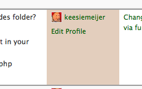

Tools for WordPress dot org forum moderators
For more tools visit the support handbook helpful tools page
Forum posts (you replied to) in order of activity
A tool to display the topics of your WordPress [dot] org Profile Pages in order of activity can be found here:
Github development repository
WordPress Topic Redirect
A Greasemonkey user script that forces https, adds view=all to topic urls and redirects if needed. Tested in Firefox and Chrome.
See: WordPress Topic Redirect
Alfred Workflows (Mac OS X)
Two workflows for the Alfred app (version 2) to search the WordPress developer reference and the Codex function reference can be found here and here
Keyboard navigation. version 3.2.1
Contributors: keesiemeijer, Clorith, anevins
A Javascript tool that adds keyboard shortcuts to the following pages.
- wordpress.org/support/bb-admin/posts.php
- wordpress.org/support/bb-admin/topics.php
- wordpress.org/support/profile/profile-name
- wordpress.org/support/profile/profile-name/edit
- wordpress.org/support/topic/topic-title
- wordpress.org/support/view/theme-reviews
- wordpress.org/support/view/plugin-reviews
Type m in any of these pages to see what shortcuts are available
This tool appends "&view=all" to topic links where possible in the forums. This allows logged in moderators to see deleted and spam posts in a thread. Duplicate IPs are detected and you can uncapitalize text with the click of a button. Use a button to see all reviews if a review page is paginated. Ajax is used to make it easier to delete tags, posts or marking posts as not spam. Links to the modlook tag page and the spam queue are added to the mod menu.
If a user tags a post with "modlook" a link to the users profile page will be added after the tag.

Older versions and changlogs of the scripts can be found at the Release Archive or Github.
installation
This tool can be installed in three ways, as a Javascript bookmarklet, a Firefox add-on, or a Greasemonkey user script (Firefox, Chrome). The add-on and user scripts run automatically on the specific pages and the bookmarklet has to be clicked from the browser bookmark menu.
See the Disclaimer about using the user scripts in other browsers.
Javascript bookmarklet
Drag this bookmarklet to your browser's bookmark menu: Moderator Tools
Go to one of the listed pages above and click the bookmarklet in your browser bookmark bar. Type "m" (menu) to see what shortcuts are available.
Firefox add-on
Click to install the Firefox Addon
Or download the Firefox Addon and add it manually.
Restart Firefox for the add-on to be activated.
Note: Remove earlier versions (if you have them) from the Firefox add-on page.
The add-on was created by this Greasemonkey script compiler.
Code used in the compiler: wp_moderator_shortcuts.js
Firefox Greasemonkey script
Install Greasemonkey (If you haven't done so already).
Click to install the: Firefox Greasemonkey user script
Chrome Greasemonkey script
(No need to install Greasemonkey)
- Click this Chrome Greasemonkey user script (Chrome will download the script, because it doesn't allow scripts to be added outside the Chrome Web Store)
- Go to "Window" > "Extensions"
- Drop the "wp_greasemonkey_Chrome.user.js" file in the "Extensions" page
- Click "Add"
Download the user script if it doesn't install. Unzip it and drop the file in the Chrome "Extensions" page.
Alternative methods:
Use the Tampermonkey Chrome extension to manage your user scripts.(thanks Jan!). The extension allows scripts to be added outside the Chrome Web Store directly.
If the keyboard schortcuts open a new window and you want it to open a new tab use this Chrome extension.
Usage
By typing "m" you open the menu where you can see information about the page and what shortcuts are available.
The menu.

Clicking "shortcuts" or typing "h" displays all shortcuts available for that page.

The current post is marked by a grey border.
In these pages an "Edit Profile" link is automatically added to all posts.

You can select a post by clicking in the author column. The author column gets a new background color when the post is selected (for visibility).

In the spam queue b-tagged and Akismet Never Trust users are shown with a red background.

The current post is marked by a grey background color for the "User Type"


Go and play and test all the shortcuts for yourself.
Duplicate IP's
wordpress.org/support/topic/topic-title
If a thread contains duplicate IP's for different users it will show a warning (DUPLICATE IP) in all posts with the duplicate IP. Be aware that users with the same IP doesn't necessarily mean the users are gaming the system.

Uncapitalize selected text
wordpress.org/support/edit.php
A button is added to the post editor to uncapitalize selected text. This button can be used for the post text and the topic title
Example before selecting text and clicking the button.

After.

Defaults
The Greasemonkey user scripts hides the menu by default and uses a brownish background color for selected posts. By editing the Greasemonkey file you can have it show the menu by default and change the selected color. Find var U="hide";var g="#e3cebd"; at the start of the minified javascript. Change "hide" to show var U="show"; and change the color in var g="#e3cebd"; to your liking and save the file.
Disclaimer
All the user scripts are tested in Firefox and Chrome. If other browsers support Greasemonkey user scripts try one of the (user.js) files found on this page. The Javascript bookmarklet can be used in all browsers.
Happy moderating